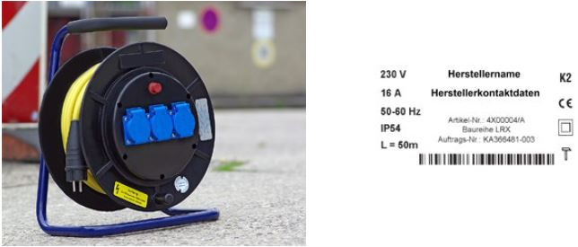
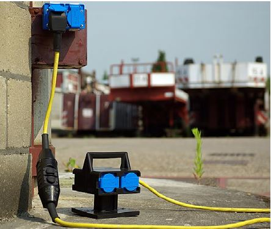
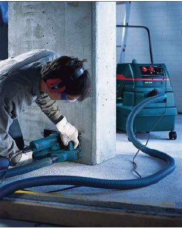
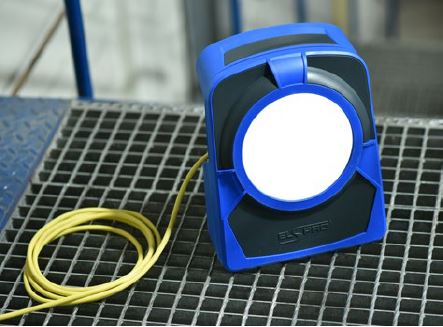
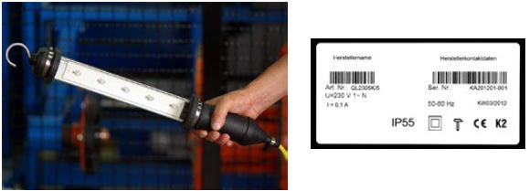

Bei der Auswahl ortsveränderlicher elektrischer Betriebsmittel sind die Einsatzbedingungen zu berücksichtigen (siehe DGUV Information 203-005 "Auswahl und Betrieb ortsveränderlicher elektrischer Betriebsmittel nach Einsatzbedingungen").
Bewegliche Leitungen (Ausnahme für Geräteanschlussleitungen siehe Abschnitte 6.4 bis 6.6) müssen der Bauart H07RN-F entsprechen oder eine mindestens gleichwertige Beständigkeit gegenüber Wasser, mechanischen und thermischen Einwirkungen aufweisen (H07BQ-F ist z. B. nur eingeschränkt beständig gegenüber thermischer Einwirkung von außen, z. B. bei Schweißarbeiten).
Bei sehr hohen mechanischen Beanspruchungen, z. B. in Bereichen des Tunnelbaus, sind Leitungen höherwertiger Bauart geeignet, z. B. NSSHÖU nach VDE 0250-812. Zusätzlich zu den hier aufgestellten Forderungen kann im Einzelfall, z. B. im Tunnelbau, die Forderung erhoben werden, halogenfreies Leitungsmaterial mit oder ohne definierten Funktionserhalt einzusetzen, z. B. E30 … E90.
An Stellen, an denen Leitungen mechanisch besonders beansprucht werden können, sind sie zu schützen. Leitungen gelten als geschützt verlegt, wenn sie z. B.
sind.
Leitungsroller sind geeignet, wenn sie die Anforderungen nach Grundsatz GS-ET-35 „Grundsätze für die Prüfung und Zertifizierung von Leitungsrollern für Bau- und Montagestellen“ erfüllen. Das bedeutet, dass sie nach VDE 0620-300 oder VDE 0623-100 gebaut sind und zusätzlich folgende Merkmale aufweisen:
Leitungsroller sind in der vorgesehenen Gebrauchslage (aufrecht auf Tragegestell stehend) zu betreiben.

Abb. 20 Geeigneter Leitungsroller und Typschild mit notwendigen Angaben
| Die Hintereinanderschaltung von mehreren Leitungsrollern sollte vermieden werden, da hierdurch je nach Anlagenkonfiguration der Schutz bei Überstrom nicht mehr gewährleistet ist. |
Schutzverteiler sind eine Kombination aus einer PRCD-S und Steckdosen. Folgende Anforderungen müssen erfüllt sein:

Abb. 21 Schutzverteiler mit vier Steckdosen
Installationsmaterial, z. B. Schalter, Steckvorrichtungen, muss während des Betriebes mindestens die Schutzart IP X4 erfüllen. Die vom Hersteller vorgesehene Einbaulage und Verwendung sind zu beachten.
Die Gehäuse von Steckvorrichtungen müssen aus Isolierstoff bestehen und eine ausreichende mechanische und thermische Beständigkeit aufweisen.
Wenn die Verschraubung einer Steckvorrichtung nicht nur abdichtet, sondern auch die Zugentlastung übernimmt, ist bei wiederkehrenden Prüfungen darauf zu achten, dass die Verschraubung fest angezogen ist und die genannten Funktionen weiterhin erfüllt werden. Falls erforderlich, sind die Leitungen neu abzusetzen und anzuschließen.
Wenn elektrische Betriebsmittel mit einer Geräteanschlussleitung ausgestattet sind, muss diese den Anforderungen aus Abschnitt 6.1 entsprechen.
Bis zu einer Leitungslänge von 4 m ist als Geräteanschlussleitung auch die Bauart H05RN-F oder H05BQ-F zulässig, soweit nicht die zutreffende Gerätenorm die Bauart H07RN-F fordert.
Bei besonderen Umgebungsbedingungen müssen geeignete zusätzliche Maßnahmen getroffen werden, oder die Arbeiten sind einzustellen. Besondere Umgebungsbedingungen sind z. B. Nässe oder leitfähiger Staub. Zusätzliche Maßnahmen sind z. B. Wetterschutz, Abdeckungen und Schutzhauben.

Abb. 22 Mauernutfräse mit Staubabsaugung
Bei besonderen Betriebsbedingungen sind vor Arbeitsbeginn ergänzende Maßnahmen zu treffen. Besondere Betriebsbedingungen sind z. B. gegeben beim Nasskernbohren oder beim Nassschleifen. Ergänzende Schutzmaßnahmen können z. B. die Verwendung von Schutzkleinspannung oder Schutztrennung sein (siehe auch DGUV Information 203-004 "Einsatz elektrischer Betriebsmittel bei erhöhter elektrischer Gefährdung").
Die Anforderungen des Abschnitts 6.6 gelten nicht für Batterie und Akku betriebene Leuchten.
Bei erschwerten mechanischen Bedingungen müssen leitungsgebundene Leuchten ihren jeweils zutreffenden Produktnormen (Reihe VDE 0711) entsprechen und zusätzlich folgenden Anforderungen genügen:
Auf Baustellen sind Beleuchtungsanlagen zu errichten, wenn in Zeiten nicht ausreichenden Tageslichts oder unterhalb der Erdgleiche gearbeitet wird. Hinsichtlich der Beleuchtungsstärke, Blendung, Reflexion, Schattenbildung und Lichtfarbe sind die Anforderungen der ASR A3.4 zu erfüllen. Bei besonderen Gefährdungen kann es notwendig sein, für Flucht- und Rettungswege eine Sicherheitsbeleuchtung nach VDE 0108-100 vorzusehen.
Die Beleuchtungsanlage ist ständig an den Baufortschritt anzupassen.
Anforderungen an das zu verwendende Installationsmaterial ergeben sich aus Abschnitt 6.4, Anforderungen an die zu verwendenden Leuchten aus Abschnitt 6.6.
Für die Verkabelung der Leuchten untereinander gelten die Anforderungen aus Abschnitt 6.1. Dabei ist mindestens die Leitungsbauart H07RN-F oder H07BQ-F zu verwenden.
Leitungen sind zugentlastet zu montieren. Bei Decken- und Wandleuchten sind die Leitungen in angemessenen Abständen ausreichend zu befestigen.
Bei Leuchten, die in Schutzklasse II (schutzisoliert) ausgeführt sind, ist der Schutzleiter, soweit vorhanden, durchzuschleifen und über die gesamte Länge der Leuchten-Verkabelung mitzuführen.
Leuchten, die als Bodenleuchten eingesetzt werden, müssen mindestens in der Schutzart IP 55 ausgeführt sein (für in Leuchten eingebaute Steckdosen gilt Abschnitt 6.4).

Abb. 23 Geeignete Bodenleuchte
Handleuchten müssen mindestens in der Schutzart IP 55 ausgeführt sein und den Festlegungen in VDE 0711-2-8 entsprechen.
Auf Bau- und Montagestellen dürfen nur Handleuchten der Schutzklasse II oder III verwendet werden.
Handleuchten zur Verwendung bei erhöhter elektrischer Gefährdung müssen der Schutzklasse III entsprechen.
Körper, Griff und äußere Teile der Fassung müssen aus Isolierstoff bestehen.
Handleuchten müssen mit einem Schutzglas und einem Schutzkorb ausgerüstet sein. Der Schutzkorb kann entfallen, wenn statt des Schutzglases eine bruchfeste Umschließung aus Kunststoff oder vergleichbarem Material vorhanden ist.
Die Leitungseinführung muss über eine ausreichende Zugentlastung und einen Knickschutz verfügen.
Die Geräteanschlussleitung muss den Anforderungen aus Abschnitt 6.1 entsprechen.
Bis zu einer Leitungslänge von 5 m ist als Geräteanschlussleitung auch die Bauart H05RN-F oder H05BQ-F zulässig.

Abb. 24 Geeignete Handleuchte mit Typschild